Baños de Agua Santa ofrece servicios turísticos pensados para garantizar una experiencia agradable y memorable.La iniciativa del área de Servicios tiene como propósito principal fortalecer la experiencia turística en Baños de Agua Santa mediante la difusión organizada de la oferta hotelera, gastronómica y de atención al visitante. Esta propuesta busca facilitar el acceso a información clara y confiable, permitiendo que los turistas planifiquen su estadía de manera eficiente y conozcan las alternativas disponibles dentro del cantón. |
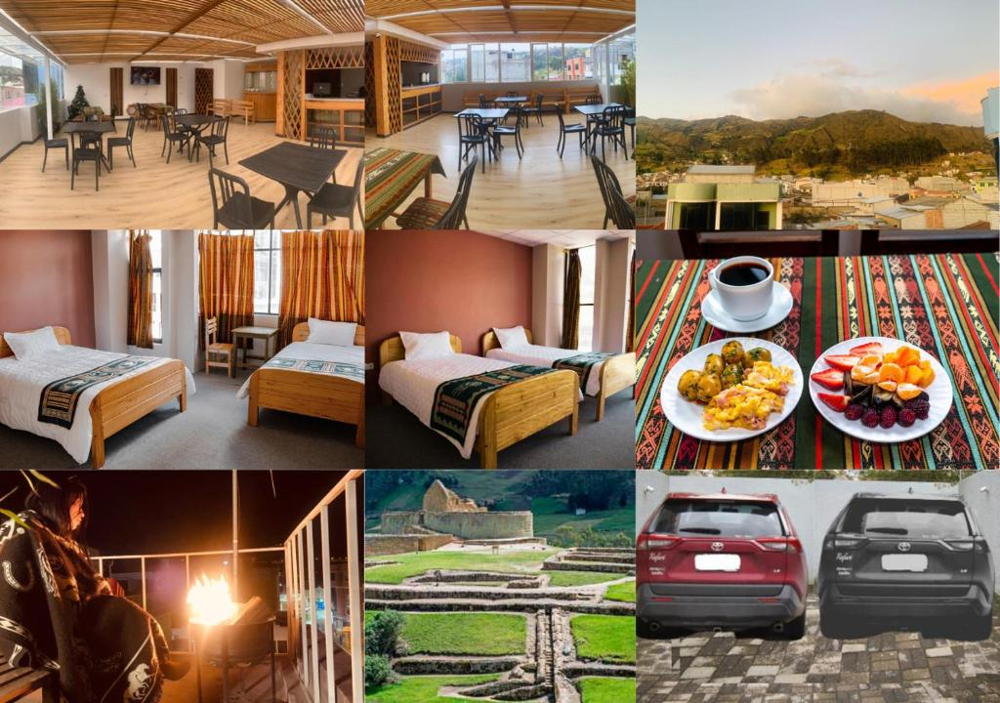 |
Baños de Agua Santa dispone de una amplia variedad de hoteles y hosterías que se adaptan a diferentes presupuestos y estilos de viaje.
El Sangay Spa Hotel ofrece habitaciones confortables, áreas de relajación y un spa completamente equipado. Es reconocido por su ubicación céntrica y por proporcionar un ambiente tranquilo, ideal para recuperar energías luego de realizar actividades turísticas. Su servicio se caracteriza por la atención cordial y el enfoque en el bienestar del visitante.
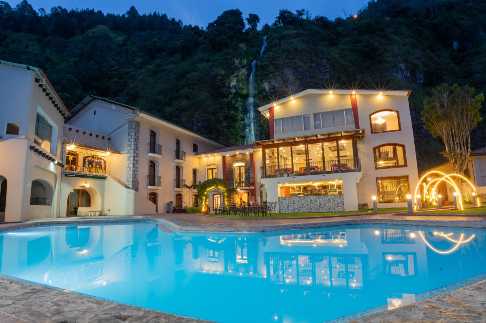
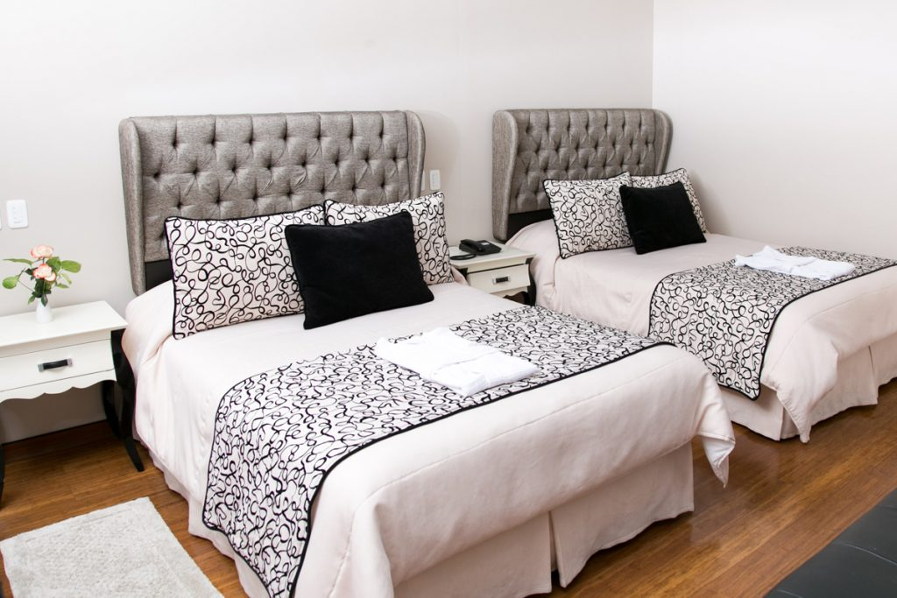
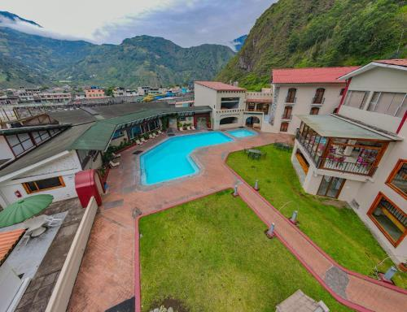
Luna Volcán Adventure Spa se destaca por sus vistas panorámicas, piscinas termales y servicios de lujo. Este establecimiento combina naturaleza, aventura y bienestar, permitiendo a los huéspedes disfrutar de experiencias únicas rodeadas de paisajes naturales. Además, ofrece espacios diseñados para la relajación y el descanso profundo.
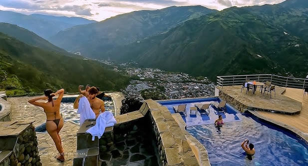
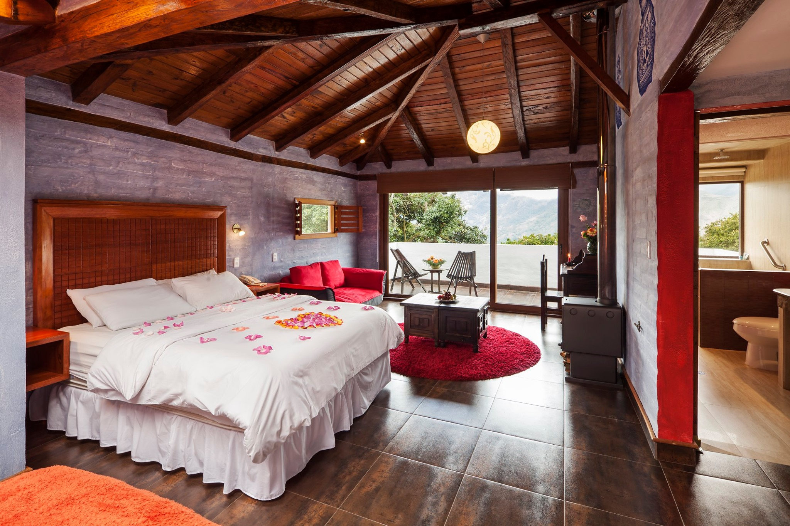
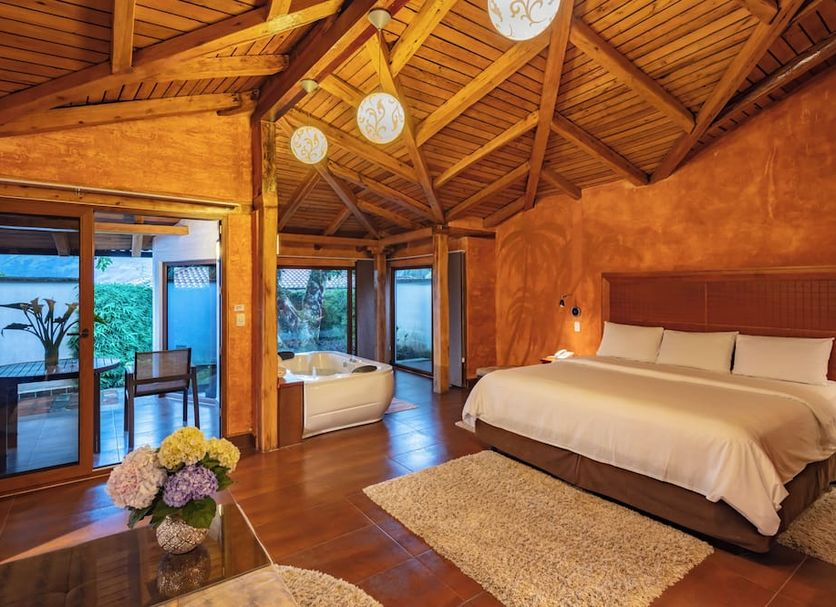
Samari Spa Resort brinda una experiencia exclusiva en un entorno natural privilegiado. Cuenta con amplias instalaciones, tratamientos de spa especializados y un servicio personalizado orientado al confort del visitante. Es una opción ideal para quienes buscan tranquilidad, privacidad y atención de alta calidad.
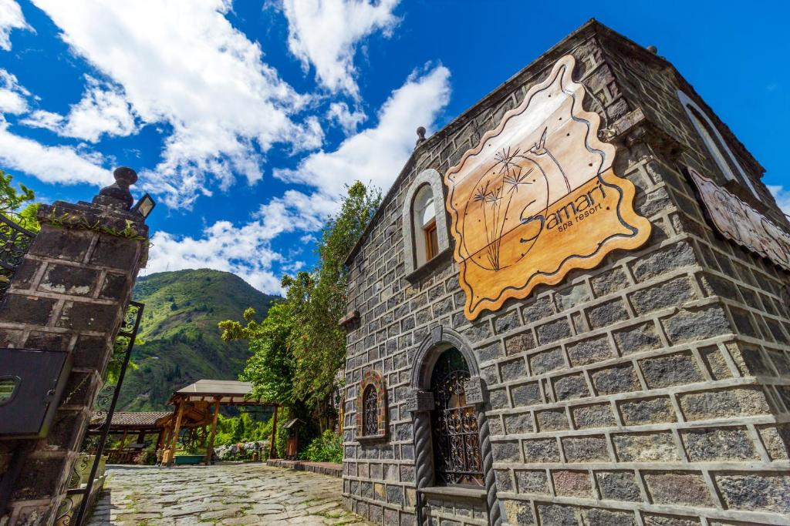
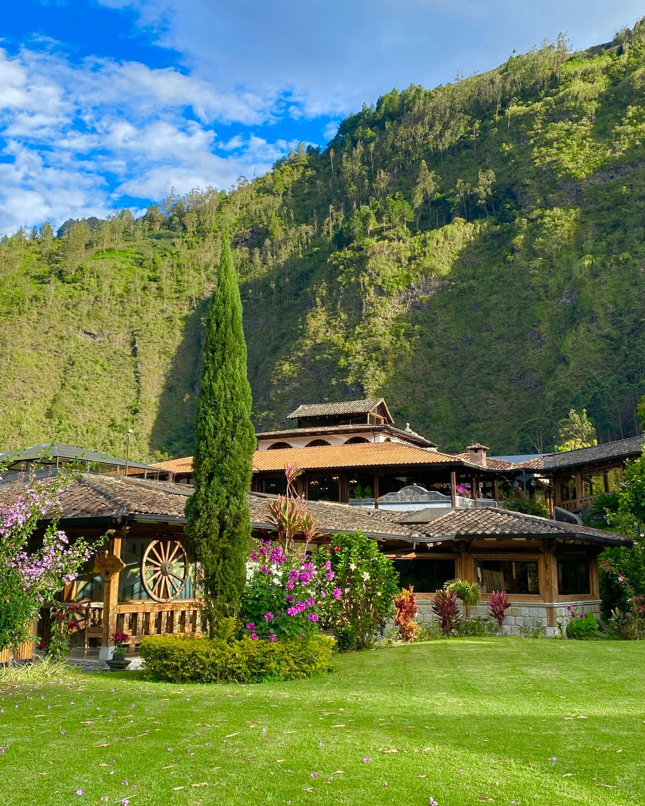
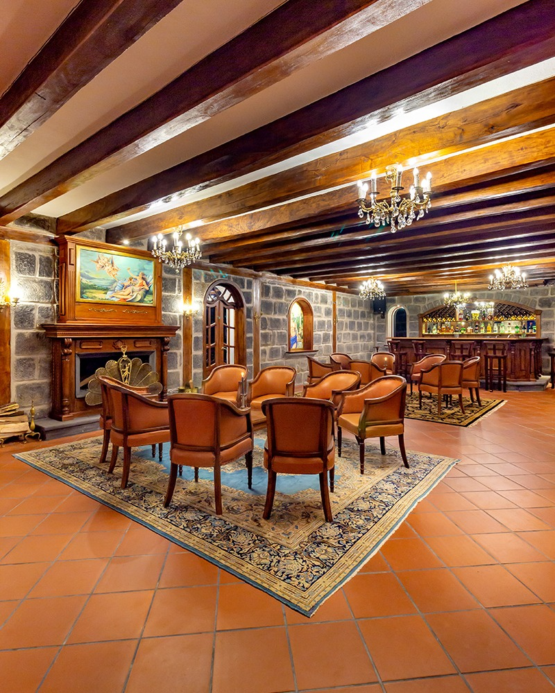
Hotel Monte Selva ofrece un ambiente acogedor con habitaciones bien equipadas y espacios comunes agradables. Es una alternativa apreciada por viajeros que buscan tranquilidad, buena atención y una estadía confortable a precios accesibles.
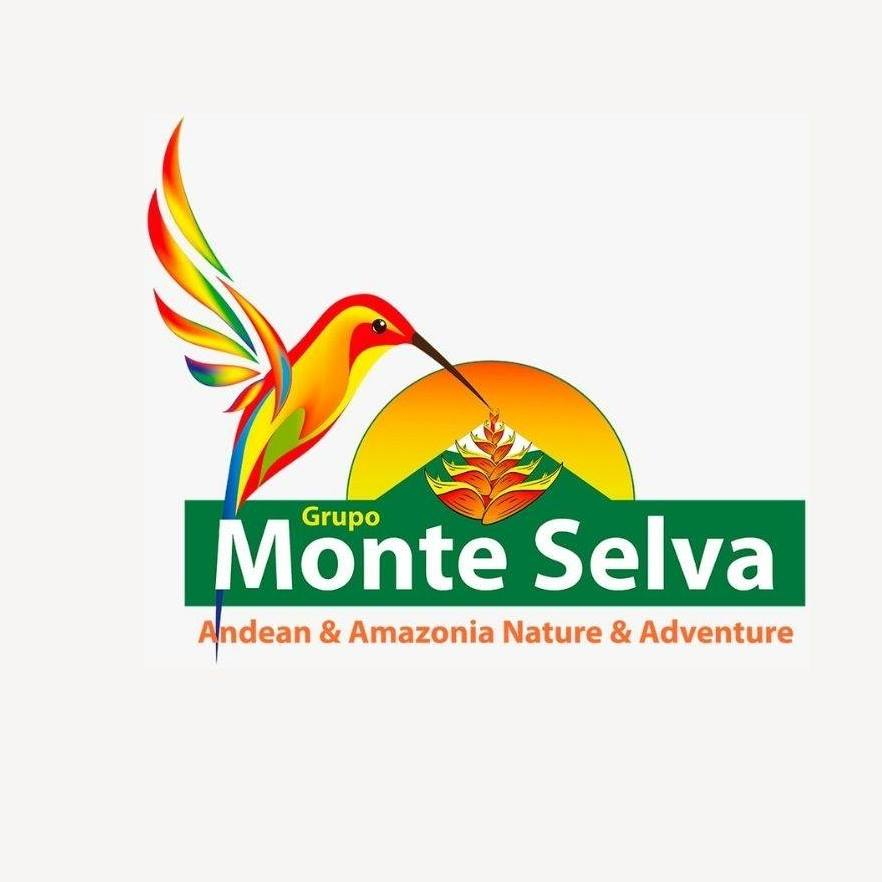
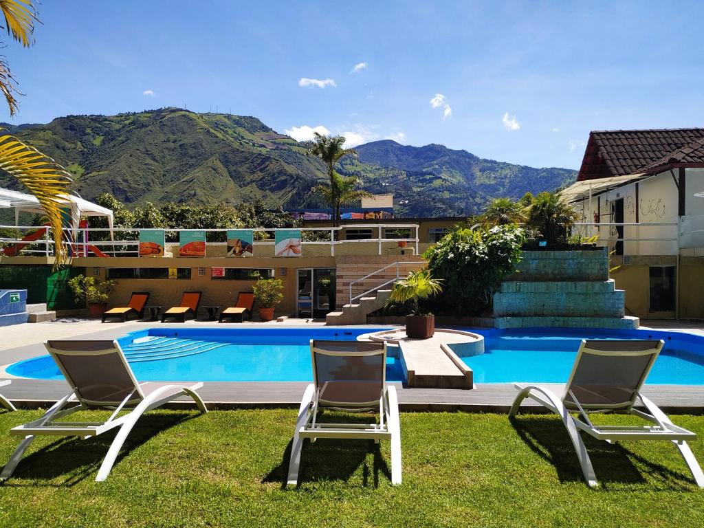
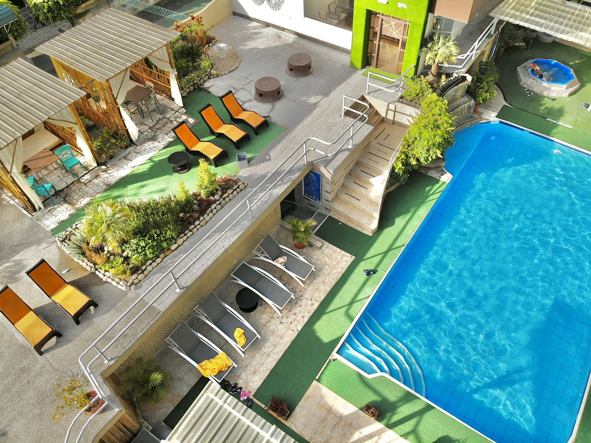
Socialtel Baños proporciona hospedaje moderno y accesible, especialmente dirigido a turistas jóvenes y viajeros internacionales. Además de alojamiento, promueve espacios sociales, actividades comunitarias y experiencias culturales que fomentan la interacción entre visitantes.
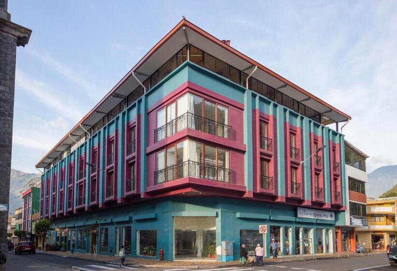
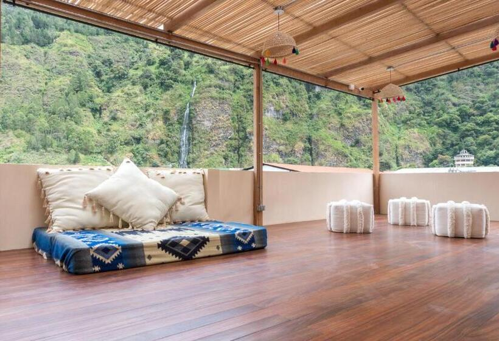
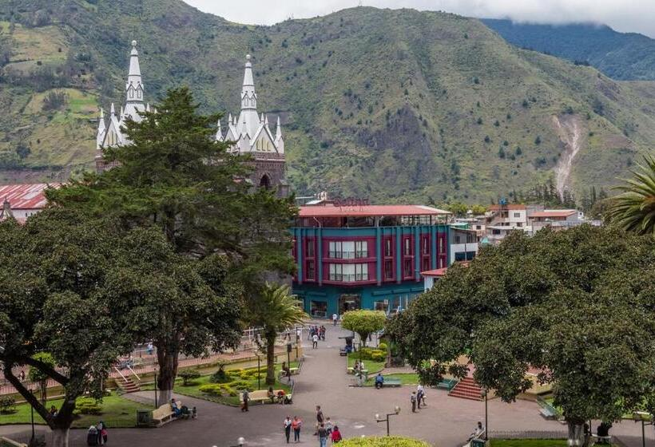
La gastronomía en Baños de Agua Santa combina sabores tradicionales ecuatorianos con propuestas internacionales, ofreciendo una experiencia culinaria diversa que refleja la identidad cultural del cantón. Restaurantes y cafeterías locales presentan platos elaborados con ingredientes frescos, destacando recetas típicas y opciones innovadoras.
Swiss Bistro Baños presenta platos de cocina europea e internacional en un ambiente cómodo y familiar. Es reconocido por la calidad de sus preparaciones, la presentación de sus platos y su servicio atento.
Caña Mandur Restaurant destaca por su comida típica ecuatoriana, preparada con ingredientes locales. Es una opción popular entre visitantes que desean conocer los sabores tradicionales de la región en un entorno agradable.
LOLA Café Restaurant ofrece desayunos, almuerzos y cafés especiales. Su ambiente relajado lo convierte en un punto de encuentro tanto para turistas como para residentes, brindando un espacio ideal para descansar y compartir.
Mestizart Ecuadorian Restaurant promueve la cocina nacional mediante recetas auténticas y un enfoque cultural, resaltando la identidad gastronómica del Ecuador y ofreciendo una experiencia culinaria representativa del país.
Casa Hood es un restaurante ubicado en Baños de Agua Santa que se destaca por su ambiente acogedor y su propuesta gastronómica variada. Ofrece platos bien elaborados que combinan sabores locales e internacionales, ideales para quienes buscan una experiencia agradable sin gastar demasiado. Su atención cordial, el diseño cálido del espacio y la calidad de sus preparaciones lo convierten en una excelente opción para compartir una comida tranquila en la ciudad.
Además del hospedaje y la gastronomía, Baños de Agua Santa cuenta con servicios adicionales que fortalecen la experiencia turística y facilitan la estadía de los visitantes. Las agencias de turismo locales organizan recorridos guiados, visitas a cascadas, rutas naturales y actividades de aventura como canopy, rafting y senderismo, acompañadas por guías capacitados que garantizan seguridad y orientación.
Agencias de turismo que organizan recorridos guiados, visitas a cascadas y actividades de aventura.
Centros de spa y termas que ofrecen masajes, piscinas termales y tratamientos relajantes.
Transporte turístico, alquiler de bicicletas y vehículos para recorrer la ciudad y sus alrededores.
Puntos de información turística que orientan al visitante sobre rutas, horarios y atractivos.